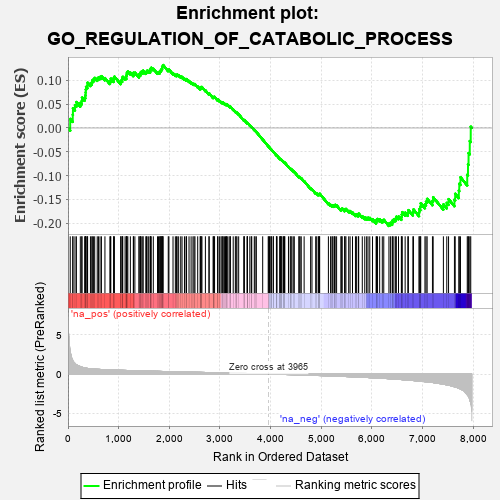
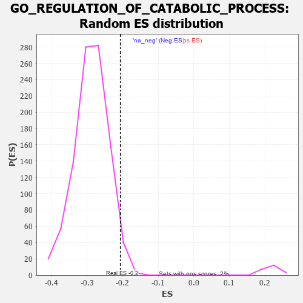

| | | Dataset | 7d |
| Phenotype | NoPhenotypeAvailable |
| Upregulated in class | na_neg |
| GeneSet | GO_REGULATION_OF_CATABOLIC_PROCESS |
| Enrichment Score (ES) | -0.20607708 |
| Normalized Enrichment Score (NES) | -0.7145557 |
| Nominal p-value | 0.97341514 |
| FDR q-value | 1.0 |
| FWER p-Value | 1.0 |
Table: GSEA Results Summary

Fig 1: Enrichment plot: GO_REGULATION_OF_CATABOLIC_PROCESS
Profile of the Running ES Score & Positions of GeneSet Members on the Rank Ordered List
| PROBE | GENE SYMBOL | GENE_TITLE | RANK IN GENE LIST | RANK METRIC SCORE | RUNNING ES | CORE ENRICHMENT | | 1 | PCBP4 | | | 44 | 2.875 | 0.0191 | No |
| 2 | UBE2K | | | 94 | 1.739 | 0.0278 | No |
| 3 | IRS1 | | | 98 | 1.659 | 0.0417 | No |
| 4 | DESI1 | | | 138 | 1.332 | 0.0481 | No |
| 5 | AXIN1 | | | 166 | 1.159 | 0.0546 | No |
| 6 | NSF | | | 243 | 0.947 | 0.0529 | No |
| 7 | ULK1 | | | 272 | 0.875 | 0.0569 | No |
| 8 | HGF | | | 276 | 0.870 | 0.0640 | No |
| 9 | NUP85 | | | 329 | 0.772 | 0.0639 | No |
| 10 | DAPK2 | | | 343 | 0.754 | 0.0687 | No |
| 11 | CNOT7 | | | 348 | 0.750 | 0.0747 | No |
| 12 | GSK3A | | | 351 | 0.745 | 0.0808 | No |
| 13 | ARNT | | | 357 | 0.741 | 0.0866 | No |
| 14 | AXIN2 | | | 383 | 0.713 | 0.0895 | No |
| 15 | BAX | | | 387 | 0.711 | 0.0952 | No |
| 16 | SUFU | | | 443 | 0.665 | 0.0938 | No |
| 17 | LRP1 | | | 470 | 0.648 | 0.0961 | No |
| 18 | CDC20 | | | 480 | 0.644 | 0.1004 | No |
| 19 | NUP54 | | | 505 | 0.627 | 0.1027 | No |
| 20 | HTRA2 | | | 527 | 0.621 | 0.1054 | No |
| 21 | APEX1 | | | 577 | 0.604 | 0.1042 | No |
| 22 | FBXW8 | | | 601 | 0.594 | 0.1064 | No |
| 23 | GLMN | | | 632 | 0.583 | 0.1075 | No |
| 24 | PARN | | | 660 | 0.572 | 0.1090 | No |
| 25 | SF3B3 | | | 729 | 0.552 | 0.1049 | No |
| 26 | RAE1 | | | 827 | 0.524 | 0.0969 | No |
| 27 | TFEB | | | 839 | 0.522 | 0.1000 | No |
| 28 | NRDC | | | 845 | 0.521 | 0.1038 | No |
| 29 | NSUN2 | | | 901 | 0.506 | 0.1010 | No |
| 30 | TMTC3 | | | 903 | 0.506 | 0.1053 | No |
| 31 | WDR6 | | | 916 | 0.504 | 0.1081 | No |
| 32 | AKT1 | | | 1040 | 0.476 | 0.0962 | No |
| 33 | TAF9 | | | 1046 | 0.475 | 0.0997 | No |
| 34 | XPA | | | 1070 | 0.469 | 0.1008 | No |
| 35 | AIFM1 | | | 1072 | 0.469 | 0.1047 | No |
| 36 | FOXK2 | | | 1081 | 0.467 | 0.1077 | No |
| 37 | NUP93 | | | 1127 | 0.459 | 0.1058 | No |
| 38 | PSMD7 | | | 1152 | 0.454 | 0.1066 | No |
| 39 | SCOC | | | 1153 | 0.453 | 0.1105 | No |
| 40 | NUP43 | | | 1160 | 0.453 | 0.1136 | No |
| 41 | GRSF1 | | | 1164 | 0.452 | 0.1171 | No |
| 42 | PSMD2 | | | 1181 | 0.450 | 0.1189 | No |
| 43 | KAT8 | | | 1231 | 0.442 | 0.1164 | No |
| 44 | PARL | | | 1290 | 0.432 | 0.1126 | No |
| 45 | DKC1 | | | 1292 | 0.431 | 0.1162 | No |
| 46 | NRDE2 | | | 1320 | 0.425 | 0.1164 | No |
| 47 | NOCT | | | 1402 | 0.409 | 0.1094 | No |
| 48 | EXOC1 | | | 1403 | 0.409 | 0.1130 | No |
| 49 | NUP88 | | | 1429 | 0.404 | 0.1132 | No |
| 50 | RBM10 | | | 1430 | 0.404 | 0.1167 | No |
| 51 | RBX1 | | | 1445 | 0.401 | 0.1183 | No |
| 52 | TIMP2 | | | 1478 | 0.394 | 0.1176 | No |
| 53 | TAF15 | | | 1481 | 0.393 | 0.1207 | No |
| 54 | SCO1 | | | 1536 | 0.385 | 0.1171 | No |
| 55 | QSOX1 | | | 1550 | 0.382 | 0.1187 | No |
| 56 | BOLL | | | 1561 | 0.381 | 0.1207 | No |
| 57 | NPRL3 | | | 1592 | 0.375 | 0.1200 | No |
| 58 | N4BP1 | | | 1622 | 0.370 | 0.1195 | No |
| 59 | CDK4 | | | 1626 | 0.370 | 0.1223 | No |
| 60 | DERL2 | | | 1632 | 0.368 | 0.1248 | No |
| 61 | DDB1 | | | 1642 | 0.366 | 0.1268 | No |
| 62 | TNPO1 | | | 1684 | 0.359 | 0.1246 | No |
| 63 | AGO2 | | | 1767 | 0.343 | 0.1169 | No |
| 64 | NUP58 | | | 1787 | 0.340 | 0.1174 | No |
| 65 | PSMD4 | | | 1811 | 0.335 | 0.1173 | No |
| 66 | FMR1 | | | 1816 | 0.334 | 0.1196 | No |
| 67 | UVRAG | | | 1831 | 0.332 | 0.1207 | No |
| 68 | GATA4 | | | 1837 | 0.330 | 0.1229 | No |
| 69 | TRIM5 | | | 1852 | 0.327 | 0.1239 | No |
| 70 | PSMD6 | | | 1858 | 0.326 | 0.1261 | No |
| 71 | FOXK1 | | | 1859 | 0.326 | 0.1289 | No |
| 72 | NUP62 | | | 1871 | 0.324 | 0.1302 | No |
| 73 | DCP1A | | | 1877 | 0.323 | 0.1324 | No |
| 74 | BRSK2 | | | 1979 | 0.308 | 0.1220 | No |
| 75 | MYEF2 | | | 1992 | 0.306 | 0.1230 | No |
| 76 | DDX49 | | | 2073 | 0.295 | 0.1152 | No |
| 77 | SNF8 | | | 2119 | 0.288 | 0.1119 | No |
| 78 | PSME4 | | | 2143 | 0.285 | 0.1114 | No |
| 79 | DTL | | | 2154 | 0.284 | 0.1125 | No |
| 80 | NPRL2 | | | 2184 | 0.278 | 0.1112 | No |
| 81 | MYLIP | | | 2225 | 0.272 | 0.1083 | No |
| 82 | PSMF1 | | | 2251 | 0.268 | 0.1074 | No |
| 83 | NBAS | | | 2299 | 0.260 | 0.1036 | No |
| 84 | SEC13 | | | 2330 | 0.256 | 0.1019 | No |
| 85 | FAF1 | | | 2340 | 0.255 | 0.1029 | No |
| 86 | HIPK2 | | | 2389 | 0.247 | 0.0988 | No |
| 87 | MET | | | 2430 | 0.240 | 0.0957 | No |
| 88 | UBXN1 | | | 2467 | 0.232 | 0.0931 | No |
| 89 | UBAC2 | | | 2488 | 0.229 | 0.0925 | No |
| 90 | HUWE1 | | | 2506 | 0.225 | 0.0922 | No |
| 91 | PSMD5 | | | 2560 | 0.218 | 0.0872 | No |
| 92 | PDE12 | | | 2608 | 0.211 | 0.0830 | No |
| 93 | BAG3 | | | 2620 | 0.209 | 0.0833 | No |
| 94 | NUP50 | | | 2625 | 0.209 | 0.0846 | No |
| 95 | PUM2 | | | 2627 | 0.209 | 0.0863 | No |
| 96 | KAT5 | | | 2644 | 0.206 | 0.0860 | No |
| 97 | PHB2 | | | 2712 | 0.197 | 0.0790 | No |
| 98 | SCFD1 | | | 2783 | 0.185 | 0.0716 | No |
| 99 | XRN1 | | | 2786 | 0.185 | 0.0729 | No |
| 100 | UCHL5 | | | 2864 | 0.172 | 0.0644 | No |
| 101 | CIRBP | | | 2876 | 0.170 | 0.0645 | No |
| 102 | DAPK3 | | | 2880 | 0.169 | 0.0655 | No |
| 103 | MTM1 | | | 2893 | 0.168 | 0.0654 | No |
| 104 | SOCS4 | | | 2953 | 0.157 | 0.0591 | No |
| 105 | XPO1 | | | 2960 | 0.156 | 0.0597 | No |
| 106 | AZIN2 | | | 2993 | 0.150 | 0.0569 | No |
| 107 | BSCL2 | | | 3021 | 0.146 | 0.0546 | No |
| 108 | UFL1 | | | 3041 | 0.144 | 0.0534 | No |
| 109 | FEZ1 | | | 3055 | 0.142 | 0.0529 | No |
| 110 | KEAP1 | | | 3063 | 0.141 | 0.0533 | No |
| 111 | TIGAR | | | 3091 | 0.138 | 0.0509 | No |
| 112 | GPX1 | | | 3109 | 0.135 | 0.0499 | No |
| 113 | MTMR2 | | | 3126 | 0.133 | 0.0490 | No |
| 114 | WWP1 | | | 3127 | 0.133 | 0.0501 | No |
| 115 | EDEM2 | | | 3145 | 0.131 | 0.0491 | No |
| 116 | PSMD9 | | | 3179 | 0.125 | 0.0459 | No |
| 117 | MTMR8 | | | 3200 | 0.122 | 0.0443 | No |
| 118 | FZR1 | | | 3205 | 0.122 | 0.0449 | No |
| 119 | NUP98 | | | 3261 | 0.112 | 0.0387 | No |
| 120 | SMAD3 | | | 3303 | 0.105 | 0.0343 | No |
| 121 | RAB8A | | | 3319 | 0.102 | 0.0332 | No |
| 122 | CHFR | | | 3335 | 0.099 | 0.0322 | No |
| 123 | SMAD7 | | | 3369 | 0.093 | 0.0287 | No |
| 124 | CNOT1 | | | 3473 | 0.081 | 0.0161 | No |
| 125 | HGS | | | 3476 | 0.080 | 0.0165 | No |
| 126 | CDK5 | | | 3480 | 0.080 | 0.0168 | No |
| 127 | ASB11 | | | 3537 | 0.070 | 0.0102 | No |
| 128 | NELL1 | | | 3538 | 0.070 | 0.0108 | No |
| 129 | PIN1 | | | 3543 | 0.069 | 0.0108 | No |
| 130 | MAPK3 | | | 3589 | 0.062 | 0.0055 | No |
| 131 | WAC | | | 3618 | 0.056 | 0.0024 | No |
| 132 | RIC1 | | | 3627 | 0.055 | 0.0018 | No |
| 133 | ABCD1 | | | 3677 | 0.047 | -0.0041 | No |
| 134 | DHX9 | | | 3693 | 0.044 | -0.0057 | No |
| 135 | HSF1 | | | 3718 | 0.039 | -0.0084 | No |
| 136 | SMG1 | | | 3843 | 0.021 | -0.0243 | No |
| 137 | GGA1 | | | 3952 | 0.002 | -0.0383 | No |
| 138 | NCOR1 | | | 3961 | 0.000 | -0.0393 | No |
| 139 | CHMP6 | | | 3977 | -0.003 | -0.0412 | No |
| 140 | VPS35 | | | 3989 | -0.006 | -0.0426 | No |
| 141 | SNX32 | | | 4012 | -0.010 | -0.0453 | No |
| 142 | RNF14 | | | 4013 | -0.010 | -0.0453 | No |
| 143 | ATG5 | | | 4051 | -0.016 | -0.0499 | No |
| 144 | WDR41 | | | 4053 | -0.016 | -0.0499 | No |
| 145 | MTOR | | | 4114 | -0.025 | -0.0575 | No |
| 146 | EXOC8 | | | 4120 | -0.026 | -0.0579 | No |
| 147 | ABL1 | | | 4125 | -0.027 | -0.0582 | No |
| 148 | EXOC4 | | | 4182 | -0.039 | -0.0651 | No |
| 149 | RRAGD | | | 4183 | -0.039 | -0.0648 | No |
| 150 | SESN1 | | | 4192 | -0.041 | -0.0654 | No |
| 151 | VPS11 | | | 4202 | -0.041 | -0.0662 | No |
| 152 | TIMP1 | | | 4209 | -0.043 | -0.0667 | No |
| 153 | RRAGA | | | 4223 | -0.046 | -0.0679 | No |
| 154 | RPTOR | | | 4252 | -0.050 | -0.0711 | No |
| 155 | PCID2 | | | 4258 | -0.051 | -0.0713 | No |
| 156 | NRBP2 | | | 4274 | -0.055 | -0.0728 | No |
| 157 | PSME3 | | | 4280 | -0.056 | -0.0730 | No |
| 158 | ADRB2 | | | 4352 | -0.068 | -0.0816 | No |
| 159 | MTMR9 | | | 4387 | -0.074 | -0.0853 | No |
| 160 | STX5 | | | 4400 | -0.077 | -0.0862 | No |
| 161 | PRR5L | | | 4418 | -0.080 | -0.0877 | No |
| 162 | CDC37 | | | 4446 | -0.084 | -0.0905 | No |
| 163 | LRRK2 | | | 4467 | -0.087 | -0.0924 | No |
| 164 | APC | | | 4558 | -0.107 | -0.1031 | No |
| 165 | BAG6 | | | 4563 | -0.108 | -0.1027 | No |
| 166 | VPS28 | | | 4582 | -0.114 | -0.1040 | No |
| 167 | NUB1 | | | 4604 | -0.119 | -0.1057 | No |
| 168 | ITPR1 | | | 4661 | -0.130 | -0.1118 | No |
| 169 | PIM2 | | | 4789 | -0.155 | -0.1269 | No |
| 170 | FBXW7 | | | 4816 | -0.161 | -0.1289 | No |
| 171 | CLU | | | 4889 | -0.174 | -0.1367 | No |
| 172 | TLK2 | | | 4909 | -0.179 | -0.1376 | No |
| 173 | EP300 | | | 4941 | -0.186 | -0.1400 | No |
| 174 | EXOC7 | | | 4948 | -0.188 | -0.1392 | No |
| 175 | DXO | | | 4964 | -0.191 | -0.1395 | No |
| 176 | ATG4B | | | 4968 | -0.192 | -0.1382 | No |
| 177 | FLCN | | | 5140 | -0.235 | -0.1583 | No |
| 178 | HDAC6 | | | 5183 | -0.244 | -0.1617 | No |
| 179 | ATM | | | 5210 | -0.249 | -0.1629 | No |
| 180 | TMF1 | | | 5225 | -0.251 | -0.1625 | No |
| 181 | IDE | | | 5252 | -0.258 | -0.1637 | No |
| 182 | PTEN | | | 5262 | -0.261 | -0.1626 | No |
| 183 | EPHA4 | | | 5273 | -0.265 | -0.1616 | No |
| 184 | RAB7A | | | 5302 | -0.271 | -0.1629 | No |
| 185 | FZD5 | | | 5386 | -0.292 | -0.1711 | No |
| 186 | SUMO2 | | | 5402 | -0.296 | -0.1705 | No |
| 187 | LATS1 | | | 5412 | -0.298 | -0.1691 | No |
| 188 | LRIG2 | | | 5460 | -0.310 | -0.1725 | No |
| 189 | CPT1A | | | 5467 | -0.311 | -0.1706 | No |
| 190 | ACTN3 | | | 5486 | -0.315 | -0.1702 | No |
| 191 | EDEM1 | | | 5541 | -0.331 | -0.1744 | No |
| 192 | WDR24 | | | 5568 | -0.338 | -0.1748 | No |
| 193 | LARP1 | | | 5616 | -0.349 | -0.1779 | No |
| 194 | PSMD1 | | | 5674 | -0.367 | -0.1821 | No |
| 195 | MTCL1 | | | 5697 | -0.374 | -0.1817 | No |
| 196 | DAP | | | 5732 | -0.386 | -0.1828 | No |
| 197 | PDCL3 | | | 5738 | -0.388 | -0.1801 | No |
| 198 | MTMR3 | | | 5809 | -0.408 | -0.1856 | No |
| 199 | ATG7 | | | 5858 | -0.420 | -0.1882 | No |
| 200 | SET | | | 5895 | -0.434 | -0.1891 | No |
| 201 | STK11 | | | 5922 | -0.443 | -0.1887 | No |
| 202 | SGSM3 | | | 5957 | -0.457 | -0.1892 | No |
| 203 | XBP1 | | | 6011 | -0.475 | -0.1919 | No |
| 204 | PLK1 | | | 6082 | -0.500 | -0.1967 | No |
| 205 | UBB | | | 6090 | -0.503 | -0.1932 | No |
| 206 | ATG13 | | | 6110 | -0.508 | -0.1913 | No |
| 207 | ROCK1 | | | 6152 | -0.520 | -0.1921 | No |
| 208 | INSR | | | 6204 | -0.538 | -0.1941 | No |
| 209 | RGN | | | 6233 | -0.547 | -0.1930 | No |
| 210 | IFT88 | | | 6335 | -0.590 | -0.2010 | Yes |
| 211 | NPC1 | | | 6364 | -0.602 | -0.1994 | Yes |
| 212 | RALB | | | 6399 | -0.617 | -0.1985 | Yes |
| 213 | HSPB8 | | | 6408 | -0.621 | -0.1942 | Yes |
| 214 | ABCA2 | | | 6433 | -0.634 | -0.1918 | Yes |
| 215 | HERC1 | | | 6467 | -0.647 | -0.1905 | Yes |
| 216 | DYSF | | | 6481 | -0.654 | -0.1866 | Yes |
| 217 | PLIN5 | | | 6524 | -0.672 | -0.1862 | Yes |
| 218 | CLN3 | | | 6580 | -0.699 | -0.1873 | Yes |
| 219 | RNF41 | | | 6588 | -0.703 | -0.1821 | Yes |
| 220 | TPR | | | 6597 | -0.709 | -0.1771 | Yes |
| 221 | RAB5A | | | 6655 | -0.741 | -0.1780 | Yes |
| 222 | EGFR | | | 6708 | -0.765 | -0.1782 | Yes |
| 223 | GSK3B | | | 6719 | -0.768 | -0.1728 | Yes |
| 224 | ADAM9 | | | 6808 | -0.819 | -0.1772 | Yes |
| 225 | GIPC1 | | | 6819 | -0.826 | -0.1713 | Yes |
| 226 | SNX33 | | | 6930 | -0.888 | -0.1779 | Yes |
| 227 | SNX3 | | | 6934 | -0.893 | -0.1706 | Yes |
| 228 | FBXL2 | | | 6956 | -0.911 | -0.1655 | Yes |
| 229 | DNM1L | | | 6963 | -0.913 | -0.1584 | Yes |
| 230 | FBXL5 | | | 7046 | -0.965 | -0.1607 | Yes |
| 231 | MFSD8 | | | 7067 | -0.977 | -0.1548 | Yes |
| 232 | BBS7 | | | 7089 | -0.988 | -0.1490 | Yes |
| 233 | TSPO | | | 7194 | -1.065 | -0.1533 | Yes |
| 234 | MFN2 | | | 7208 | -1.081 | -0.1457 | Yes |
| 235 | UBC | | | 7410 | -1.274 | -0.1607 | Yes |
| 236 | CPTP | | | 7477 | -1.373 | -0.1574 | Yes |
| 237 | VDAC1 | | | 7512 | -1.409 | -0.1497 | Yes |
| 238 | PKD1 | | | 7628 | -1.611 | -0.1507 | Yes |
| 239 | TAF1 | | | 7643 | -1.633 | -0.1384 | Yes |
| 240 | BOK | | | 7715 | -1.817 | -0.1319 | Yes |
| 241 | DCP2 | | | 7724 | -1.833 | -0.1171 | Yes |
| 242 | CASP3 | | | 7747 | -1.902 | -0.1036 | Yes |
| 243 | FYN | | | 7881 | -2.622 | -0.0982 | Yes |
| 244 | CAV3 | | | 7896 | -2.739 | -0.0764 | Yes |
| 245 | PSMD3 | | | 7907 | -2.887 | -0.0528 | Yes |
| 246 | PSMD8 | | | 7931 | -3.286 | -0.0274 | Yes |
| 247 | DAPK1 | | | 7950 | -3.767 | 0.0027 | Yes |
Table: GSEA details [plain text format]

Fig 2: GO_REGULATION_OF_CATABOLIC_PROCESS: Random ES distribution
Gene set null distribution of ES for GO_REGULATION_OF_CATABOLIC_PROCESS